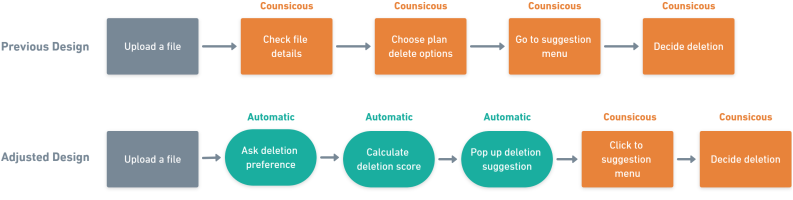
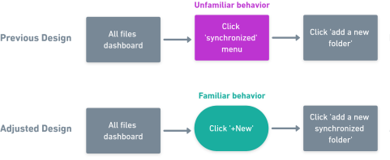
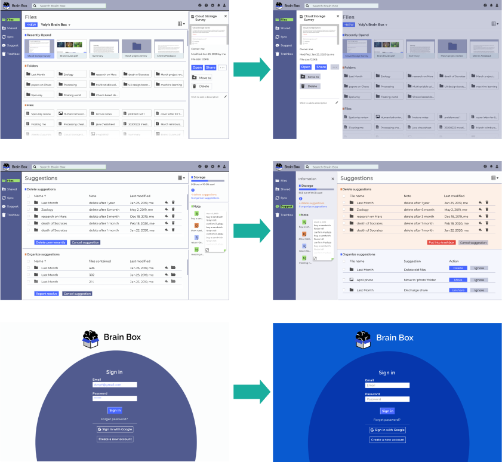

Lack of management for file accessibility, folder structure and local synchronization results in users’ distrust for online storage space and unnecessary upload/download behavior.
Brain Box understands that there are 2 stage of user behavior in a cloud storage app: the first stage to store some content and the second stage to manage and maintain that content. It’s like putting a brain online, apart from absorbing and outputting information, it also needs to organize itself and fix problems in a control center.
I selected 3 representative competitors: Google Drive, Dropbox and Notion.
After a detailed SWOT analysis considering all aspects of competitors, I summarized the following metrics to measure a product’s market position: scope of user group, space/price ratio, capability to organize, capability to share, capability to synchronize and prominence of highlight features. Roughly the 3 competitors can be placed in the following diagram:
The competitive analysis shows a big niche space between the metric levels of major competitors. With same levels of technique breakthrough, I think a new competitor will be of competition advantage if it can have/be:
I conducted a general survey to validate this competition direction. In the question about the reason to use cloud storage tools, 77.3% respondents chose backing up files, 66.7% chose office collaboration, which validates the importance of sync and share features. Again in the question of most commonly used features, share features became the number one demanded. I decide to make the improvement of organization, sync and share as 3 criteria for my design.
To deeply dig into the problem, I conducted interviews with users with different backgrounds. A gap between professions is clearly shown. I decided to mainly focus on a cross group of users that I have most connection with: tech workers and designers.
Based on real interviews, I made two personas, Haruka and Katrine’s stories, representing each specific usage case.
I differentiate the constructive behavior and the management behavior: as argued previously, users need maintenance and management of their files after they have created or shared them in the first place.
I designed the workflow so that for constructive part, operations are intuitive. Users just click through, and the app record their operation meta-info for future management.
For the management part, information are shown more detailed, users manage their files according to shown information and AI suggestions.
I made wireframes according to the user flow. All file dashboard is simple and intuitive without complex features, whereas 3 other management dashboards for shared, synchronized and suggested-to-organize files have more options to choose from.
With the wireframe, I conducted the first round of user testing with 3 users. Here is the mockup and script I used:
Reflecting on the testing results, I made two major adjustments of the design. The first is happening in the user flow of deletion suggestion. Users loved this idea, but complained about its complicated workflow that needed too much conscious intention. I realized that many of its steps can happen automatically in the backstage of the app and pop up to users as a reminder such that users’ mind workload can be reduced. I made an adjusted user flow as below.
Reflecting on the testing results, I made two major adjustments of the design. The first is happening in the user flow of deletion suggestion. Users loved this idea, but complained about its complicated workflow that needed too much conscious intention. I realized that many of its steps can happen automatically in the backstage of the app and pop up to users as a reminder such that users’ mind workload can be reduced. I made an adjusted user flow as below.
To design in a consistent design language, I made the following brand style guide. Then I made high fidelity interface design according to the after-test design adjustment and the style guide.
I conducted the second round of testing with 3 other users. The high-fidelity prototype and testing notes are here:
The testing result is much smoother than the first round, to elaborate details, there were 3 other problems that I went on hacking.
According to the test, I made final adjustment to the prototype, here are some important pages:
Users don’t only upload files for one time. They revisit, sync, organize and share their files from time to time. The revisit, sync, organize and share features in current products are scattered and incomplete. Like putting a brain online, apart from absorbing and outputting information, it also needs to organize itself and fix problems in a control center.
In another word, I believe a good cloud storage app should be as easy to manage files afterwards as to initiate anything. From such need a good product can arise and have potential to stand unmovable among fierce competition.